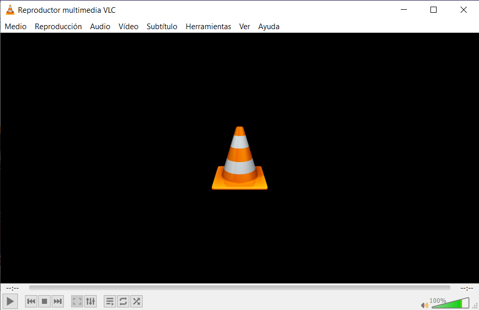
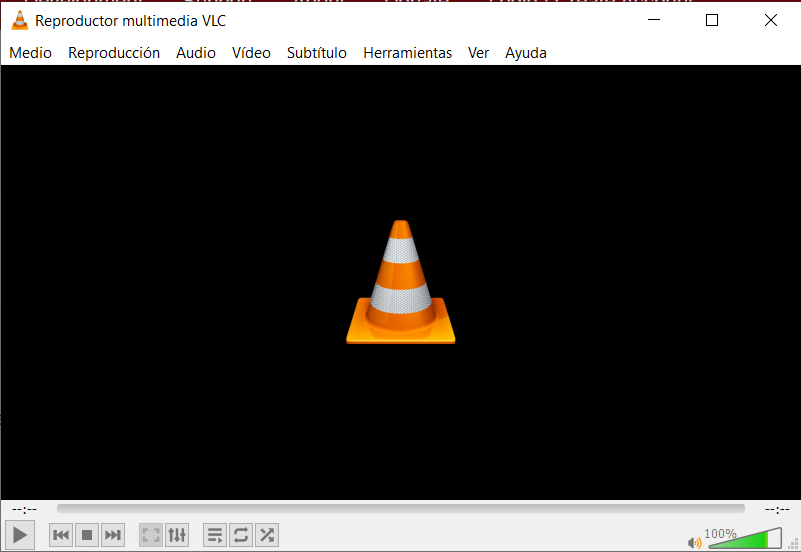

Instalación VLC Portable - Windows
VLC es famoso por ser el reproductor más versátil de internet, tiene una interfaz con un diseño meramente funcional como le ocurre a mucho software opensource, pero no se necesita demasiado en un reproductor al fin de al cabo. Reproduce todo tipo de audio, video e incluso imagenes, tiene funciones de listas de reproducción, subtitulos, y muchos ajustes de reproducción.
La versión portable de VLC no es desarrollada por VideoLan, quienes desarrollan el programa original, asi que la descargaremos en PortableApps.com.
Lo primero que debemos de hacer al ejecutar el archivo descargado es seleccionar el idioma del instalador.
Seguimos las indicaciones y clickamos siguiente.
Ahora podemos elegir si instalar el progama en solo inglés o también en los idiomas adicionales.
Es el momento de decidir la ruta de instalación del programa, al ser una aplicación portable, es procedente selecionar una memoria externa o pendrive para sacarle partido.
Una vez termine el proceso de instalación el programa ya está listo para usarse.
Comparativa VLC Original ~ VLC Portable
- 
VLC Original
- 
VLC Portable
Así es, a simple vista no hay ni una diferencia entre ellos. La diferencia más notable es que la versión original, al instalarla, nos deja decidir que componentes del programa instalar. Y como este caso es la mayoría de diferecias entre las aplicaciones portables, son iguales, quizá con alguna funcionalidad muy concreta quitada de la versión portable, pero al fin de al cabo la misma aplicación. Los casos en los que difieren realmente es cuando no se actualizan ambas versiones a la vez o la portable se abandona y queda desactualizada.